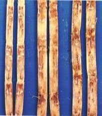
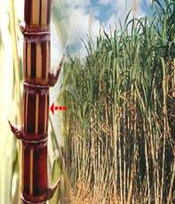
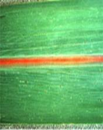

SUGARCANE :: MAJOR DISEASE :: RED ROT
Red rot - Colletotrichum falcatum(Perfect stage: Physalospora tucumanensis)
Symptoms
The first external symptom appears mostly on third or fourth leaf which withers away at the tips along the margins. Typical symptoms of red rot are observed in the internodes of a stalk by splitting it longitudinally. These include the reddening of the internal tissues which are usually elongated at right angles to the long axis of the stalk. The presence of cross-wise white patches are the important diagnostic character of the disease. The diseased cane also emits acidic-sour smell. As the disease advances, the stalk becomes hollow and covered with white mycelial growth.
|  |  |  |
Symptoms |
||
Later the rind shrinks longitudinally with minute black, velvetty fruiting bodies protruding out of it. The pathogen also produces tiny reddish lesions on the upper surface of leaves with dark dots in the centre. The lesions are initially blood red with dark margins and later on with straw coloured centres. Often the infected leaves may break at the lesions and hang down, with large number of minute black dots.
Redrot Video
Pathogen
The fungus produces thin, hyaline, septate, profusely branched hyphae containing oil droplets. The fungus produces black, minute velvetty acervuli with long, rigid bristle-like, septate setae. Conidiophores are closely packed inside the acervulus, which are short, hyaline and single celled. The conidia are single celled, hyaline, falcate, granular and guttulate. Fungus also produces large number of globose and dark brown to black perithecia with a papillate ostiole.
 |
Asci are clavate, unitunicate and eight-spored. Large number of hyaline, septate, filiform paraphyses is also present among asci. Ascospores are ellipsoid or fusoid, hyaline, straight or slightly curved and unicellular which measure 18-22 µm x 7-8µm.
Favourable Conditions
- Monoculturing of sugarcane.
- Successive ratoon cropping.
- Water logged conditions and injuries caused by insects.
Disease cycle
The fungus is sett-borne and also persists in the soil on the diseased clumps and stubbles as chlamydospores and dormant mycelium. The primary infection is mainly from infected setts. Secondary spread in the field is through irrigation water and cultivation tools. The rain splash, air currents and dew drops also help in the spread of conidia from the diseased to healthy plants in the field. The fungus also survives on collateral hosts Sorghum vulgare, S. halepenseand Saccharum spontaneum.If the conidia settle on the leaves they may germinate and invade the leaves through various types of wounds. Stem infection may take place through insect bores and root primordia. The soil-borne fungus may also enter the healthy setts through cut-ends, and cause early infection of the shoots. Though the perfect stage of the fungus has been observed in nature, the role of ascospores in the disease cycle is not understood.
Management
- Adopt crop rotation by including rice and green manure crops.
- Select the setts from the disease free fields or disease free areas.
- Aviod ratooning of the diseased crop.
- Soak the setts in 0.1% Carbendazim or Triademefon 0.05% solution for 15 minutes before planting.
- Grow resistant varieties CO 62198, CO 7704 and moderately resistant varieties CO 8001, CO8201.
- Setts can be treated with aerated steam at 52 ˚C for 4 to 5 hours and by moist hot air at 54˚C for 2 hours.